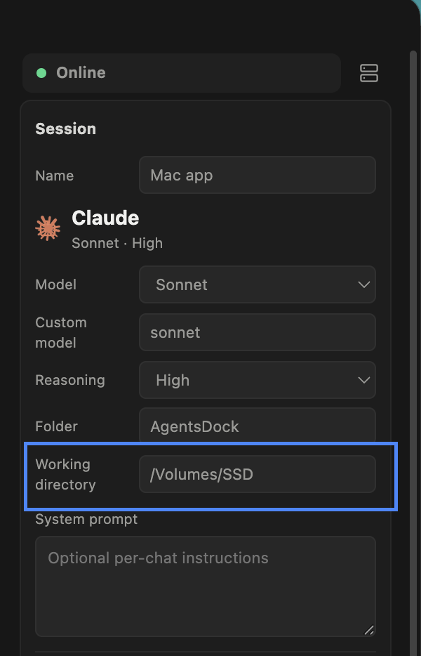

Docs
Key features
What AgentsDock gives you once you're connected — the same across desktop and mobile.
Full terminal access from any device
Attach to your chat's persistent tmux session from any device — the same shell on desktop and mobile.
Scheduled jobs
Queue interval and recurring jobs so long-running work runs on time, unattended.
Digest
Send messages between chats to carry context from one to the next.
View and edit your code
Browse, preview, and edit files on your remote directly from the app.
The files you can open are the ones under the chat's working directory — the folder on your remote that this chat's agent works in. Set it when you create the chat, or change it anytime from the Session panel on the right.

Resume chats from outside AgentsDock
Bring a Claude Code or Codex chat you started outside AgentsDock into the app — by its session ID.
Started a Claude Code or Codex session in your own terminal, before or outside AgentsDock? Every session has a session ID — paste it in and AgentsDock resumes that conversation in the app, full history and context intact, so you can carry it on from any device. It works for chats you began outside AgentsDock, not just ones started in the app.
Don't have the session ID handy? Open Import chat from the / menu to see every Claude Code and Codex session on that machine — each one listed with a preview and timestamp. Tick the chats you want and hit Import, and they land in AgentsDock with their full history — including conversations you ran entirely outside the app.
Slash commands
Type / in the message box to pull up everything you can do in a chat — commands and skills, in one quick menu.
Press / and a palette opens right above the message box: attach files, reference another chat, create a digest, send feedback, switch the model, manage MCP servers, start a new chat, and more. Use the arrow keys to move, Enter to run, Esc to close.
We support a focused set of slash commands today, with more skills on the way — the menu keeps growing, so it's worth checking what / offers.
Agent-to-agent messaging
Bring another agent into the chat with @ and hand it a task — it works on its side and replies back.
Type @ in the message box and pick another agent to address it. A mention chip appears and your message is delivered to that agent as a tracked exchange — it works across chats, and even across different servers.
The other agent receives your message, works on it on its own machine, and replies straight back into your chat. AgentsDock keeps the hand-off visible — who was addressed, whether a reply is expected, and when the exchange expires — so multi-agent back-and-forth stays organized.
Fork any chat
Branch any chat with one click to try a new direction — the original stays intact.
Want to explore a different approach without losing your current thread? Fork the chat, and AgentsDock copies its full history into a new branch you can take anywhere — while the original stays exactly as it was. It's ideal for trying an alternative prompt, running an ablation, or testing a risky change side by side with the version that already works.